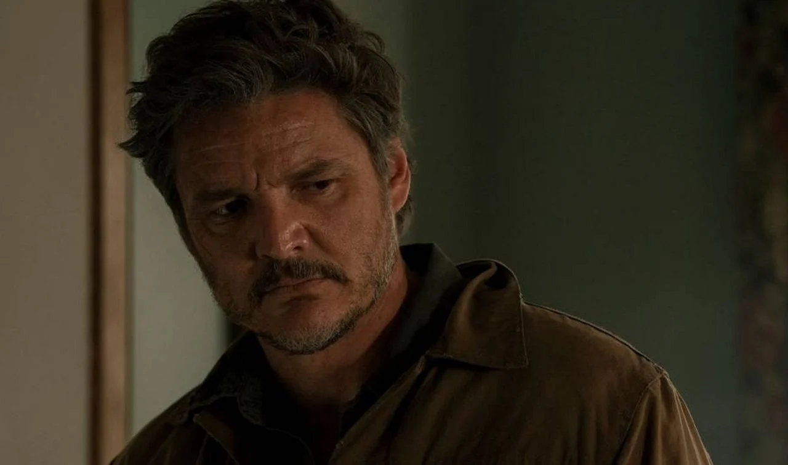

ALERTA DE SPOILER ⚠️
Atenção: Se você nunca jogou e não gosta de spoilers, recomendo não prosseguir com a leitura 🙈
The Last of Us é uma série distópica da HBO baseada na franquia de jogos de videogame de mesmo nome criada por Neil Druckmann. O drama narra um futuro pandêmico que foi devastador para humanidade, deixando os seres humanos à beira da extinção.
O vírus transforma pessoas em canibais e se espalha rapidamente com uma simples mordida. Algumas décadas depois, os poucos sobreviventes que restaram vivem viajando ou em quarentenas protegidas por oficiais do governo. Este é o cenário em que acompanhamos Joel (Pedro Pascal), um sobrevivente durão que é contratado para levar a jovem Ellie (Bella Ramsey) para fora da zona de quarentena opressiva onde vive.
Os dois devem encontrar um grupo de rebeldes paramilitares que se rebelou contra as autoridades. Porém, eles descobrem no caminho que Ellie está possivelmente infectada com o vírus, apesar da jovem não apresentar os sintomas recorrentes da doença.
Por conta disso, eles acreditam que a imunidade de Ellie pode ser a chave para encontrar a cura do vírus e potencialmente salvar a humanidade.
De maneira muito semelhante ao jogo, Joel, interpretado por Pedro Pascal, constrói laços profundos com Ellie, e até cogita em voltar para o território onde seu irmão Tommy reside, mas Ellie não aceita. Decide ir até o fim.
Ao chegar no hospital e descobrir que Ellie morreria ao tentar gerar a cura, Joel decide impedir a cirurgia e matar todos do hospital. A série termina, exatamente como o jogo. Ellie pergunta a Joel se tudo o que ele disse que aconteceu é verdade, e ele confirma.